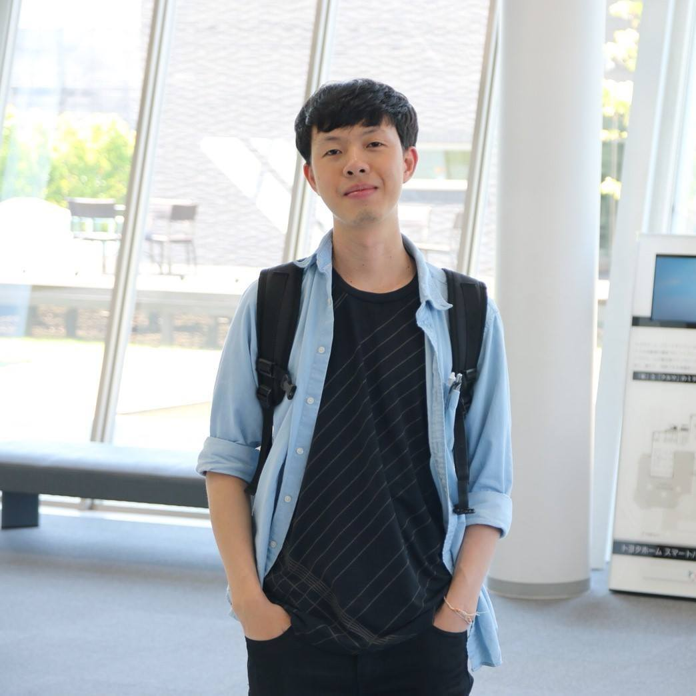
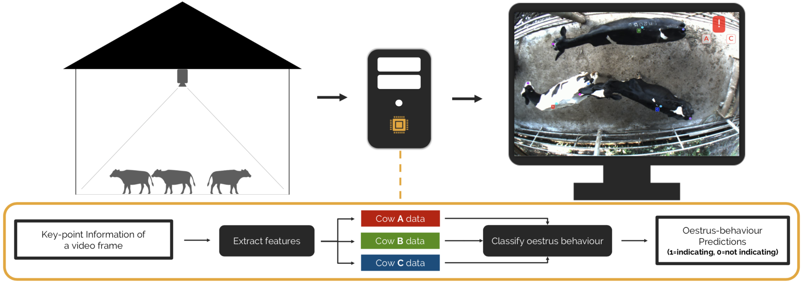
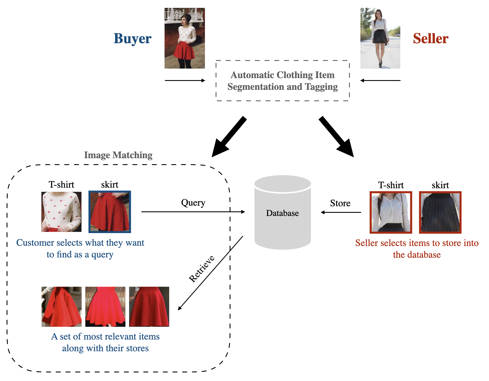
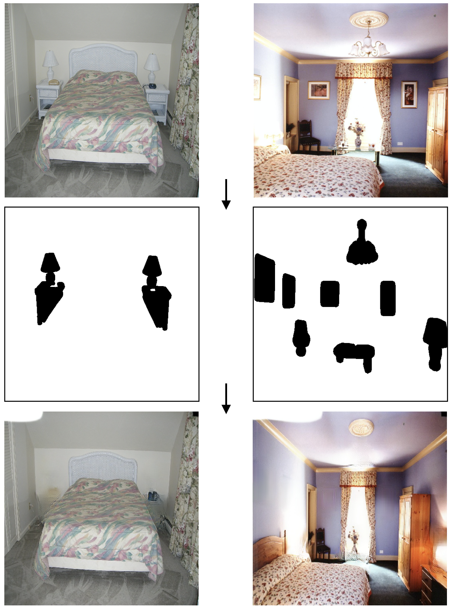
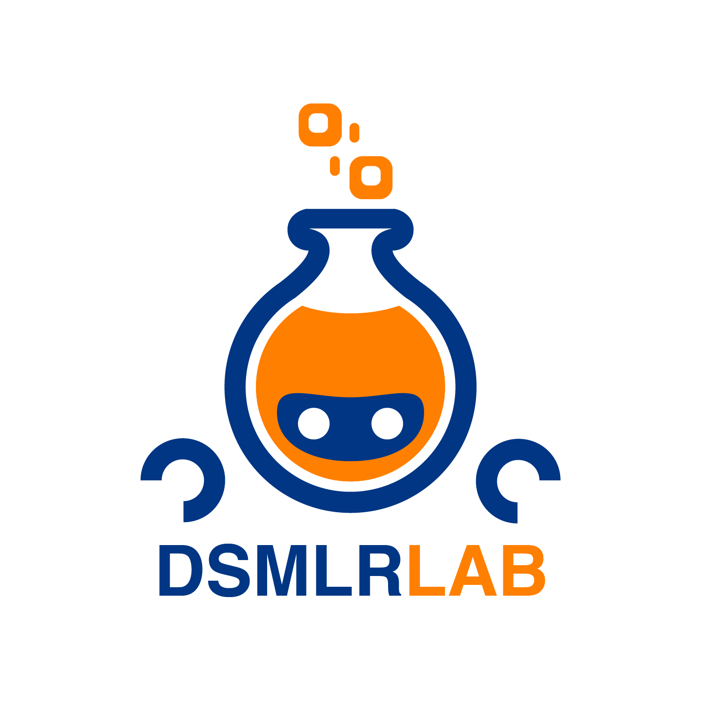
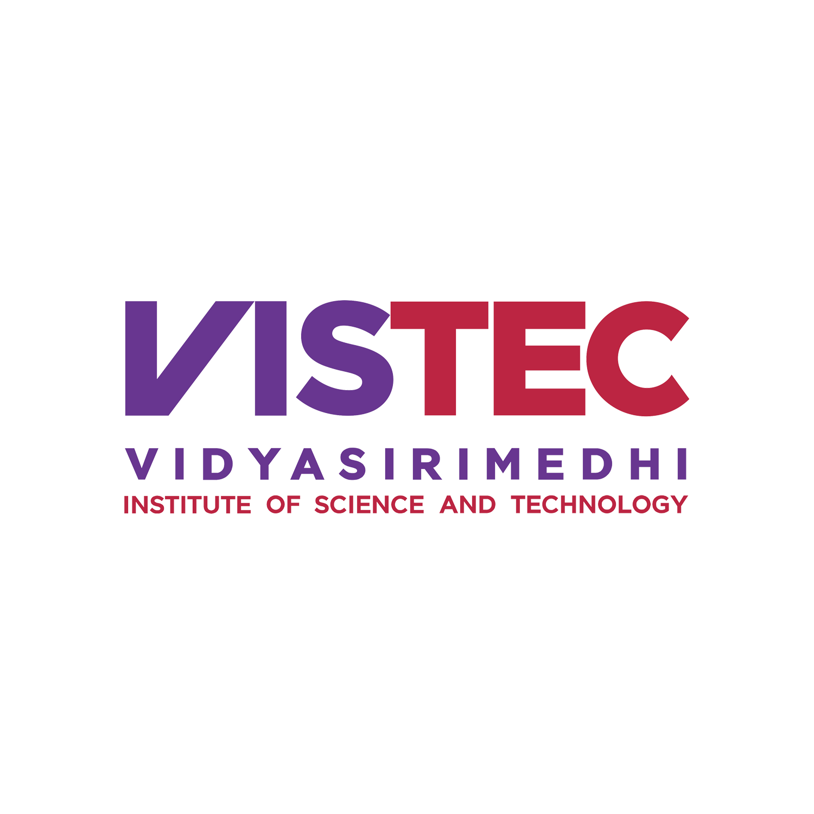

ABOUT
IMPORTANT!!! Dear professors visiting my website, I'm looking for a professor to work with for pursuing a Masters or a PhD. If you think I do suit your research, please contact me for further discussion on research works.
Hi! I'm Thanawat or Sky. I'm currently working at KASIKORN Business-Technology Group (KBTG) as a research engineer. My research focuses on machine learning, specifically deep learning for computer vision.
Interests. Machine Learning, Computer Vision
Hi! I'm Thanawat or Sky. I'm currently working at KASIKORN Business-Technology Group (KBTG) as a research engineer. My research focuses on machine learning, specifically deep learning for computer vision.
Interests. Machine Learning, Computer Vision
RESEARCH
Hybrid Loss for Improving Classification Performance with Unbalanced Data
International Conference on Neural Information Processing (ICONIP), 2020

A New Approach to Automatic Heat Detection of Cattle in Video
International Conference on Neural Information Processing (ICONIP), 2019

Fashion Finder: A System for Locating Online Stores on Instagram from Product Images
International Conference on Information Technology and Electrical Engineering (ICITEE), 2018
[video]

FurNet: A Deep-Learning-Based Framework for Removing Furniture Objects in Room Image
Internship Report

EXPERIENCE

Undergraduate Researcher
2017 - 2020
While i was pursuing a bachelor’s degree, I worked with Prof. Kitsuchart Pasupa. The works lie in the design of machine learning in real-world applications, for example, automatically detecting heat in cattle and locating online stores from a product image.

Research Intern
Summer 2019
I was supervised by Prof. Supasorn Suwajanakorn, who is the most famous computer vision researcher in Thailand. For working there, I proposed a deep-learning-based framework for removing furniture objects in a room image. The framework uses an image inpainting technique to perform the task. Moreover, I contributed to Dr. Nat Dilokthanakul‘s work. The work relates to applying machine learning techniques for communicating with a robot.
Exchange Student
Summer 2018
I got a JASSO scholarship for short-term study in Japan. I spent a wonderful summer learning academic lessons from Prof. Yoshimitsu Kuroki and his advisees. In particular, I learned how to improve Saak transform using convex optimization on sparse representation.
HONOR AND AWARD
| 2020 | Honorable Mention Award, National Software Contest on Artificial Intelligence Application | National |
| 2019 | Third Place, IST – FR 2019: Gateway to Informatics Research at EECi | National |
| 2018 | Third Place, National Software Contest on Artificial Intelligence Application | National |
| 2017 | Finalist, International ICT Innovative Services Contest | International |
| 2017 | Special Prize Award, NAPROCK International Programming Contest | International |
| 2017 | Finalist, TechJam Competition on Data Science Squad | National |
| 2017 | Honorable Mention Award, MUICT DataHack | National |